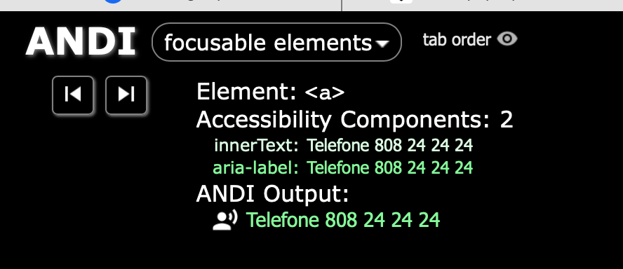
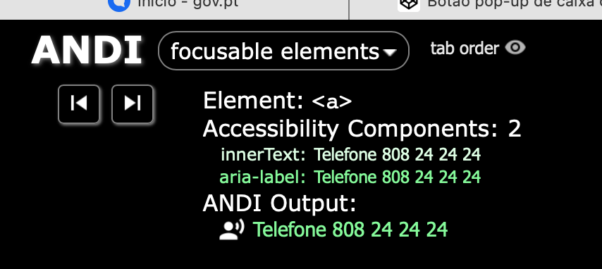
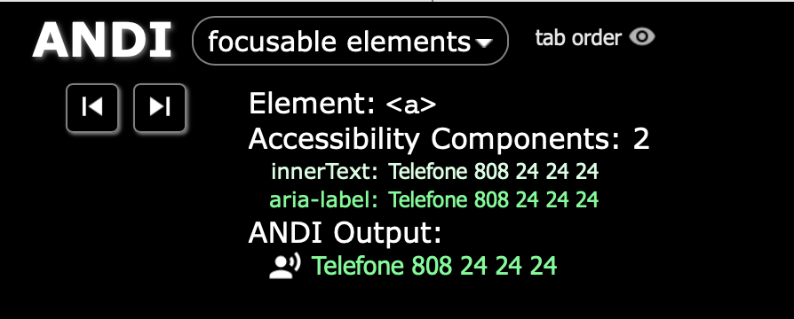
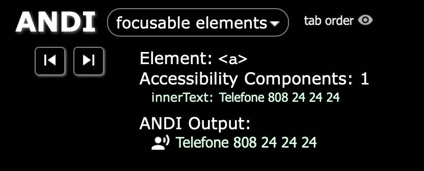
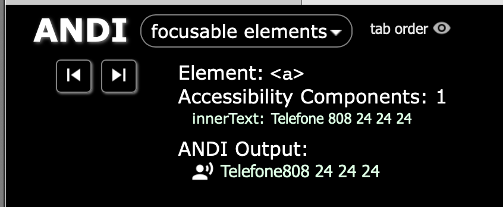
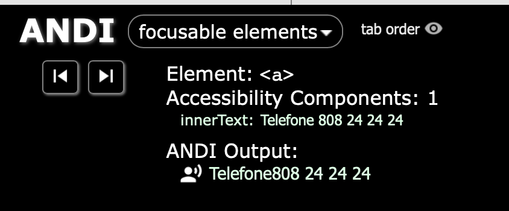
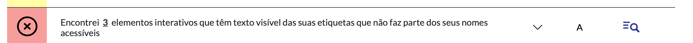

With aria-label
1a. accessible name - aria-label VS 2 divs in innerText of a link
2a. accessible name - aria-label VS 2 spans in innerText of a link
Telefone 808 24 24 243a. accessible name - aria-label VS 1 spans and 1 div in innerText of a link
TelefoneWithout aria-label
1b. accessible name - 2 divs in innerText of a link
2b. accessible name - 2 spans in innerText of a link
Telefone 808 24 24 243b. accessible name - 1 span and 1 div in innerText of a link
TelefoneConclusões
Output do VoiceOver (macOS 14.6.1)
- Sample 1a: VO says "hiperligação, Telefone 808 24 24 24" (accessible name = aria-label)
- Sample 2a: VO says "hiperligação, Telefone 808 24 24 24" (accessible name = aria-label)
- Sample 3a: VO says "hiperligação, Telefone 808 24 24 24" (accessible name = aria-label)
- Sample 1b: VO says "hiperligação, Telefone 808 24 24 24"
- Sample 2b: VO says "hiperligação, Telefone 808 24 24 24"
- Sample 3b: VO says "hiperligação, Telefone 808 24 24 24"
Ou seja, independentemente da forma como é gerado o innerText de a (div div, span span, span div), o VO usa sempre 1 espaço a separar os elementos.
Output do ANDI
Sample 1a: a aria-label div div
Sample 2a: a aria-label span span
Sample 3a: a aria-label span div
All the samples above have the same innerText computed (div div = span span = div div).
Sample 1b: a div div
Sample 2b: a span span
 accessible name">Sample 3b: a span div
 accessible name">Conclusão: o ANDI processa a construção do innerText de a sempre da mesma forma (i.e. inclui sempre 1 espaço entre os elementos), mas no processamento do nome acessível (ANDI Output) verifica-se que apenas os div div são separados com 1 espaço. As combinações span span e span div ficam coladas.
Output do AccessMonitor
Conclusão: os 3 erros coincidem com os links que têm aria-label="Telefone 808 24 24 24". Isto ocorre porque, independemente da forma como o innerText de a é formado - div div, span span, span div - o AccessMonitor processa o innerText sempre "Telefone808 24 24 24" (de notar que o ANDI faz o mesmo no "ANDI Output" nas amostras 2b e 3b.